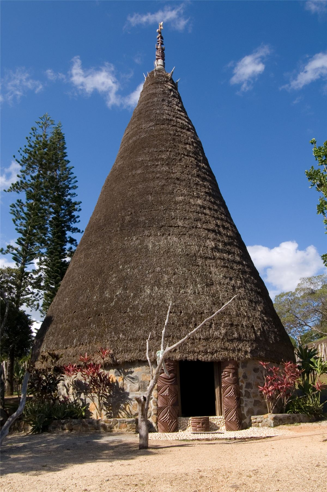

Le mouvement kanak n'est pas libertaire, et il ne prétend pas l'être : c'est un mouvement de libération nationale, avec des partis, des chefs et des élections. Mais à chaque grand moment, il s'est appuyé sur l'auto-organisation à la base : comités de lutte, barrages, écoles populaires, coutume. Mamie trouve que ça vaut le détour.
Un front, pas un parti
Le FLNKS, fondé en 1984, rassemble plusieurs organisations : l'Union calédonienne (la plus ancienne), le Parti de libération kanak (Palika, issu des Foulards rouges et du Groupe 1878), et d'autres groupes, avec le soutien d'un syndicat, l'USTKE (Union syndicale des travailleurs kanak et des exploités). Ils ne sont pas d'accord sur tout : la stratégie, les alliances, le rapport à l'État français. En 2024, le Palika et l'UPM refusent la présidence de Christian Tein, puis quittent le FLNKS en 2025.
Les comités de lutte
En février 1985, au congrès de Nakéty, le FLNKS décide que ses instances de base sont les comités de lutte, un par commune. Ce sont eux qui organisent sur le terrain les barrages, les occupations de terres et la vie des zones tenues par le mouvement. Ils désignent les délégués d'une Convention nationale, sorte de parlement indépendantiste.
Les occupations de terres sont une arme centrale : des clans réinvestissent les terres dont ils ont été chassés, et obligent l'administration à les leur rendre.

Les écoles populaires kanak
En 1985, le FLNKS appelle à boycotter « l'école coloniale ». Il crée des écoles populaires kanak (EPK), où l'on enseigne dans les langues kanak. Au plus fort, elles accueillent 1 500 à 2 000 enfants dans 56 écoles. Une expérience d'éducation populaire à grande échelle, montée en quelques mois.
Une radio à soi
En septembre 1985, le FLNKS lance Radio Djiido, pour ne plus dépendre des médias loyalistes.
2024 : la CCAT
La Cellule de coordination des actions de terrain naît le 18 novembre 2023 pour organiser la mobilisation contre le dégel du corps électoral. Jusqu'au 13 mai 2024, elle organise une quinzaine de marches et de réunions sous deux mots d'ordre : « discipliné et pacifique ». Elle coordonne sans tout contrôler : la révolte de mai 2024 la dépasse largement, portée par une jeunesse kanak des quartiers de Nouméa qui n'a rien à perdre. Pendant les émeutes, Christian Tein appelle à ne pas piller les commerces. L'État l'accuse d'être le « bras armé » du FLNKS, ce qu'elle dément, et emprisonne ses responsables à des milliers de kilomètres : sept personnes, dont sa chargée de communication Brenda Wanabo, sont envoyées dans des prisons de métropole. La répression vise celles et ceux qui organisent.
Coutume et décision
La société kanak a ses propres institutions : clans, chefferies, palabres, la coutume (des échanges et des discours qui scellent les accords). Les chefferies ont aussi été transformées par la colonisation, qui en a fait des relais administratifs. Le mouvement indépendantiste s'appuie sur la coutume tout en la discutant : la place des femmes et des jeunes, le pouvoir des grands chefs.
À retenir
- Un mouvement de libération nationale, pluriel et traversé de désaccords.
- Des comités de lutte à la base, des écoles populaires, une radio : l'auto-organisation au service de la lutte.
- Une répression qui vise d'abord les organisateurs : 1985 hier, 2024 aujourd'hui.
Sources et pour aller plus loin
Sur le web
- Le FLNKSSes composantes, ses congrès et ses divisions.
- Les Événements de 1984 à 1988Les comités de lutte et les écoles populaires kanak.
- Christian TeinLa CCAT, la prison en métropole, la présidence du FLNKS.
Sur le site
- Organiser un blocusTenir un barrage, en version lycéenne.
- Le parcours Éducation populaireApprendre par et pour les gens.
Dossier écrit à partir des articles Wikipédia cités, à relire par la bande. Sources vérifiées le 13 novembre 2026.
Dossier rédigé par la bande à Mamie à partir de travaux d'historiennes et d'historiens et de textes des mouvements concernés. Libre de reproduction.